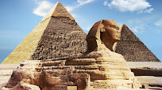
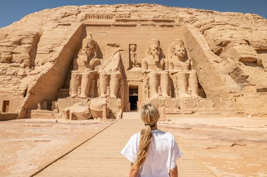

ANCIENT Egyptian
About
Welcome to ancient Egypt, we welcome you to the original Egyptian land, which is a major part of the global cultural history. Ancient Egypt is the main source of many cultures and popular arts that the Middle East witnesses today. We share with you this amazing cultural journey and we are always proud to be able to enjoy it with you. Now, let's start our special journey in the golden age of ancient Egyptian culture.
Citadel Saladin

Giza Pyramids

Sphinx
Cairo Tower

Abu Simbel temples
Al-Azhar Park
Abdeen Palace

Khan Al-Khalily/p>